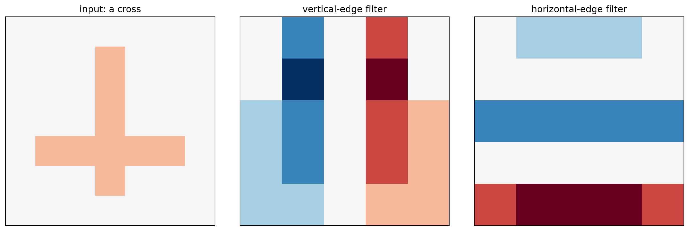

Four sections, and the first two are the ones that make the rest make sense.
Image data. What an image actually is once it is in memory, and the conventions that cause silent bugs.
Convolution. The operation, its parameters, and the arithmetic you need to predict output shapes.
Building a CNN. The standard parts, then one real network measured against the fully connected model you built in Lab 4.
Architectures that mattered. LeNet through EfficientNet, and what each one actually contributed.
Next week is what you build on top of a CNN: object detection and image segmentation.
Labs and quizzes
Lab 4 was due yesterday, Wednesday Sep 30. That was the full training pipeline: your own Dataset, a DataLoader, an optimizer comparison, early stopping, and one look at the test set.
Quiz 5 is today, at the end of class. It covers last week’s PyTorch and training material plus Lab 4. Nothing from today’s deck is on it.
Lab 5 goes out today, due Wednesday Oct 7.
One thing to flag about Quiz 5: the format changed. There are four parts now, and the last one gives you a short training script with bugs in it and asks you to find them. The study guide and formula sheet on the course site match the new format.
What Lab 4 threw away
Your Lab 4 model started with nn.Flatten(), then nn.Linear(784, 256). It reached 0.833 test accuracy on Fashion-MNIST, which is a real result.
But look at what flattening does. A 28x28 image becomes a vector of 784 numbers, in row-major order. Pixel 100 and pixel 128 are directly above and below each other in the image. After flattening they are 28 apart, which is the same distance as pixel 100 and pixel 72, and the same distance as pixel 500 and pixel 528.
nn.Linear has no way to know any of that. It sees 784 unrelated inputs. Every spatial relationship in the image is still present in the data, and it is invisible to the layer.
So the layer has to learn, separately, that a vertical edge at position 100 and a vertical edge at position 300 are the same kind of thing. Nothing shares that knowledge between positions.
The question this deck answers
What layer would use the structure instead of ignoring it?
Image data
Where image data comes from
Light from the scene passes through a lens and lands on a sensor: a grid of millions of photosites.
Each photosite samples light from one small region of the scene. That is where height and width come from.
A colour filter array sits over the grid, so each photosite measures only red, green, or blue. That is where channels come from.
A photodiode turns arriving photons into electric charge.
An analog-to-digital converter turns that charge into an integer, usually between 0 and 255.
What comes out is a three-dimensional array of integers: height by width by channels.
Two words for later. Sampling is taking measurements at discrete positions instead of everywhere. Quantization is rounding each measurement to one of a fixed set of levels. Both lose information, and both have failure modes we will look at.
An image is a tensor
Code
import numpy as npimport matplotlib.pyplot as pltfrom PIL import Imagepil = Image.open("images/cats-dog.jpg")img = np.array(pil)print("shape ", img.shape)print("dtype ", img.dtype)print("value range", f"[{img.min()}, {img.max()}]")print("total numbers", f"{img.size:,}")fig, ax = plt.subplots(figsize=(11, 6))ax.imshow(img)ax.set_title(f"{img.shape[0]} rows x {img.shape[1]} columns x "f"{img.shape[2]} channels")ax.axis("off")plt.show()
shape (1299, 2309, 3)
dtype uint8
value range [0, 255]
total numbers 8,998,173
What a pixel is
A pixel is a measurement from a sensor. It is not the truth about the scene.
The same object photographed under warm indoor light and under daylight produces different RGB values. Nothing is broken; the measurement genuinely differs. This is why “the red channel” is only meaningful relative to the lighting and the camera’s white balance.
Three consequences that matter for training:
Pixel values carry noise, and the noise is larger in dark regions.
The same object can have very different values across two photographs, which is part of why augmentation helps.
A model trained on one camera’s images can get worse on another’s.
Code
for row, col in [(260, 390), (250, 1150), (250, 1750)]: r, g, b = img[row, col]print(f"img[{row}, {col}] = R {r:3d} G {g:3d} B {b:3d}")print()print("one pixel is a vector of", img.shape[2], "numbers")print("the whole image is", f"{img.size:,}", "numbers")
img[260, 390] = R 177 G 178 B 173
img[250, 1150] = R 173 G 174 B 169
img[250, 1750] = R 161 G 160 B 156
one pixel is a vector of 3 numbers
the whole image is 8,998,173 numbers
Channel layout: HWC, CHW and NCHW
The same image can be stored with its axes in different orders, and the libraries disagree.
Layout
Shape
Who uses it
HWC
(height, width, channels)
NumPy, PIL, matplotlib, OpenCV, TensorFlow
CHW
(channels, height, width)
PyTorch
NCHW
(batch, channels, height, width)
PyTorch, batched
NHWC
(batch, height, width, channels)
TensorFlow, batched
You have already used NCHW. Lab 4’s batches were (128, 1, 28, 28): 128 images, one channel because Fashion-MNIST is greyscale, 28 rows, 28 columns.
transforms.ToTensor() does two things at once that are easy to miss. It converts HWC to CHW, and it divides by 255 so values land in [0, 1].
Code
import torchprint("HWC, as loaded ", img.shape)chw = np.transpose(img, (2, 0, 1))print("CHW, axes reordered ", chw.shape)nchw = chw[np.newaxis, ...]print("NCHW, batch axis added", nchw.shape)t = torch.from_numpy(nchw).float() /255.0print("as a float tensor ", tuple(t.shape), t.dtype,f"range [{t.min():.3f}, {t.max():.3f}]")# The same pixel, found both ways. Reordering axes does not move data.print()print("HWC img[250, 1150] ", img[250, 1150])print("CHW chw[:, 250, 1150]", chw[:, 250, 1150])
The origin is the top left. Row index grows downward. Arrays are indexed img[row, column].
Matplotlib, and most plotting and annotation code, wants (x, y), which is (column, row). The order is reversed. Swapping them is one of the most common bugs in vision code, and it does not raise an error. You get a box in the wrong place, or a transposed image if the dimensions happen to match.
Most libraries give you RGB. OpenCV gives you BGR, for historical reasons.
If you read with OpenCV and display or normalize as if it were RGB, the red and blue channels are swapped. Nothing raises. The array has the right shape and the right dtype. Training still runs. The model is just worse, and the reason is invisible.
An 8-bit channel has 2^8 = 256 possible values per pixel. That is the usual case. Medical and scientific imaging often use 16 bits, which is 65,536 levels.
Fewer levels means visible banding: smooth gradients become flat steps. It shows up in the smooth regions first, because that is where neighbouring pixels would otherwise differ by only one or two levels.
Dynamic range is the span between the darkest and brightest values a sensor can record. Push past either end and the values clip: everything brighter than the maximum records as 255, everything darker than the minimum records as 0.
Clipped values are gone. Scaling the image back down afterwards does not return them, because the differences that distinguished them were never recorded.
In the overexposed panel, 65.9% of all subpixel values are pinned at exactly 255. In the underexposed panel, 37.7% are at or below 16.
Why models normalize their inputs
Week 5 covered the reason: when inputs sit on very different scales, one learning rate cannot suit all of them. Images have a milder version of the same problem, so the convention is to standardize each channel, meaning subtract a mean and divide by a standard deviation.
x' = \frac{x - \mu_c}{\sigma_c}
The ImageNet statistics are the ones you will meet most often, because most pretrained backbones are ImageNet classifiers. They are not universal:
So do not hard-code the constants. weights.transforms() gives you the exact preprocessing those weights were trained with. Next week we measure what happens when you get this wrong.
Resolution
Resolution is sampling density: how many measurements you take across the scene. More samples means more detail, more memory, and more compute.
Bilinear interpolation gives you a smooth guess, nearest-neighbour gives you blocks, and neither gives you the whiskers back. Keep this in mind for next week: segmentation networks have to upsample, and this is the problem they are fighting.
Aliasing
Aliasing is when detail finer than your sampling grid shows up as a different, coarser pattern that was never in the scene. The fix is to blur before you shrink, so detail too fine to represent is gone before it can masquerade as something coarser.
Without a filter the whiskers break into speckles and the coat turns to noise. In torchvision, transforms.Resize(antialias=True) is the default now and did not used to be.
Data augmentation
Data augmentation is applying random, label-preserving transformations to training images, so the model sees a different version of each example every epoch.
It is a regularizer. Week 5 covered dropout and weight decay, which constrain the model. Augmentation works on the other side: it enlarges the training distribution.
from torchvision import transforms as Ttrain_tf = T.Compose([ # random, different every epoch T.RandomResizedCrop(224), T.RandomHorizontalFlip(), T.ColorJitter(brightness=0.2, contrast=0.2), T.ToTensor(), T.Normalize(mean, std),])eval_tf = T.Compose([ # deterministic, always the same T.Resize(256), T.CenterCrop(224), T.ToTensor(), T.Normalize(mean, std),])
The two pipelines are different on purpose. Randomness at evaluation time would make your validation score depend on the dice roll.
Every panel still shows a dog and two cats, which is the requirement: the transformation must not change the label.
That requirement is easy to break. A horizontal flip is safe for animals and wrong for handwritten digits and text, where it changes what the symbol is. A 180 degree rotation is safe for satellite imagery and wrong for street scenes. Augmentation choices are claims about which variations your task should ignore.
Automatic augmentation policies
The pipeline two slides ago was hand-written. Which transforms, at what strength? That literature moved toward less tuning, not more.
AutoAugment (2019) searched for a policy with reinforcement learning, at a cost of thousands of GPU hours, and published one policy per dataset. torchvision ships the three it found.
RandAugment (2020) showed the search was mostly unnecessary: pick 2 transforms at random from a list of 14 and apply both at one strength.
TrivialAugment (2021) removed even those two numbers. One random transform at one random strength per image, and nothing to tune.
torchvision published the recipe that took ResNet-50 from 76.13% to 80.86% on ImageNet with the architecture completely unchanged, and the contribution of each step.
Augmentation accounts for 1.08 of the 4.73 points. The largest single step is longer training, and that only pays off because the augmentation is strong enough to keep a longer run from overfitting. In this recipe, the aggressive and untuned TrivialAugmentWide beat both AutoAugment and RandAugment.
Mixup and CutMix break the label-preserving rule on purpose: they combine two images and combine their labels in the same proportion, so the target becomes 0.7 cat + 0.3 dog rather than one class.
Convolution
Why a fully connected layer is wrong for images
Take a 224x224 colour image, which is the standard size for pretrained models, and send it to a modest hidden layer of 1024 units.
Code
import torch.nn as nnfc = nn.Linear(224*224*3, 1024)conv = nn.Conv2d(in_channels=3, out_channels=32, kernel_size=3)n_fc =sum(p.numel() for p in fc.parameters())n_conv =sum(p.numel() for p in conv.parameters())print(f"Linear(224*224*3, 1024) {n_fc:>12,} parameters")print(f"Conv2d(3, 32, 3) {n_conv:>12,} parameters")print(f"ratio {n_fc / n_conv:>12,.0f}x")
The parameter count. 154 million parameters in one layer. That is more than VGG-16 has in its entirety, and it is the first layer of a network that has not done anything yet.
The one that matters more. A dense layer learns an independent weight for every input position. If it learns to detect a vertical edge in the top left, it has learned nothing about vertical edges in the bottom right. That knowledge is not shared, so it must be learned again, from separate examples, for every position.
An edge is an edge wherever it appears. That is a fact about images, and it is a fact a dense layer cannot use.
Convolution is the layer that uses it. Two ideas do all the work:
Locality. A unit looks at a small neighbourhood, not the whole image.
Weight sharing. The same small set of weights is applied at every position.
The convolution operation
A small grid of weights, the kernel, slides across the input. At each position it multiplies the overlapping values elementwise and sums them. That single number becomes one output value.
Note what the kernel does: it subtracts the right column from the left column and ignores the middle. That is a vertical edge detector.
Convolution over channels
A real image has 3 channels, and a layer in the middle of a network may have 256. So a kernel is not K \times K. It is K \times K \times C_{\text{in}}, and it sums over channels as well as over space.
So one filter has K^2 C_{\text{in}} weights and one bias, and a layer with F filters has F(K^2 C_{\text{in}} + 1) parameters in total. That formula is worth memorizing; it is on the formula sheet.
Filters and feature maps
One filter produces one output channel, called a feature map. It records how strongly that filter responded at every position.
A layer with F filters produces F feature maps, stacked into one output tensor. Different filters learn to respond to different things.
Code
import torch.nn.functional as Fx = torch.zeros(7, 7)x[1:6, 3] =1.0# a vertical linex[4, 1:6] =1.0# a horizontal linek_vert = torch.tensor([[1., 0., -1.]] *3) # left minus rightk_horiz = k_vert.T.contiguous() # top minus bottomy_vert = F.conv2d(x[None, None], k_vert[None, None])[0, 0]y_horiz = F.conv2d(x[None, None], k_horiz[None, None])[0, 0]fig, ax = plt.subplots(1, 3, figsize=(13, 4.2))for a, (d, t) inzip(ax, [(x, "input: a cross"), (y_vert, "vertical-edge filter"), (y_horiz, "horizontal-edge filter")]): a.imshow(d, cmap="RdBu_r", vmin=-3, vmax=3) a.set_title(t); a.set_xticks([]); a.set_yticks([])plt.tight_layout(); plt.show()print("two filters, same input, two different feature maps")

two filters, same input, two different feature maps
This is what “feature detector” means concretely. A CNN does not get these kernels from you. It starts from random values and the gradient of the loss moves them toward whatever is useful, which in the first layer turns out to look a lot like this.
Weight sharing and translation equivariance
The same kernel is applied at every position, so the layer has K^2
C_{\text{in}} + 1 parameters no matter how large the image is. A 4K image and a thumbnail use the same weights.
The second consequence has a name. Translation equivariance means that if you shift the input, the output shifts by the same amount:
Be careful with the vocabulary, because the two words get mixed up constantly:
Equivariance: the output moves with the input. Convolution has this.
Invariance: the output does not change when the input moves. Convolution does not have this. Pooling adds a little, and global pooling at the end of the network adds a lot.
Equivariance is the useful property for a feature extractor. You want to know where the edge is, not just that there is one somewhere.
Padding and output size
Without padding, each convolution shrinks the image by K-1 pixels, so a stack of layers runs out of image. Padding adds a border of zeros so the output can keep the input’s size.
H, W are the input height and width, K the kernel size, P the padding on each side, S the stride, and \lfloor\cdot\rfloor rounds down.
Two cases worth knowing by heart.
K=3, P=1, S=1 keeps the size exactly: (H + 2 - 3) + 1 = H. This is why 3x3 with padding 1 is everywhere.
ResNet’s first layer is K=7, P=3, S=2 on a 224 input: \lfloor(224 + 6 - 7)/2\rfloor + 1 = 112. Halved.
And the earlier example, H=32, K=3, P=1, S=2: \lfloor 31/2 \rfloor + 1 = 16.
Stride
Stride is how far the kernel moves between positions. Stride 1 visits every position; stride 2 skips every other one, which roughly halves the output’s height and width.
A 5x5 input with a 3x3 kernel at stride 2 gives a 2x2 output. Fewer positions means less compute and a smaller output, at the cost of skipping detail.
Pooling
Pooling reduces spatial size with a fixed rule and no learned parameters. Max pooling takes the largest value in each window. Average pooling takes the mean.
Max pooling keeps the strongest response and discards where in the window it was, which is where a small amount of translation invariance comes from. Average pooling keeps a smoother summary.
Pooling against strided convolution
Both shrink the feature map. They are not the same thing.
Pooling
No parameters. The rule is fixed before training.
Max pooling is nonlinear.
Cheap, and one less thing to learn.
Discards position within the window, on purpose.
Strided convolution
Learns how to downsample.
One operation instead of two.
More parameters and more compute.
Modern architectures mostly prefer this.
The practical summary: classification benefits from throwing position away, so pooling is fine and common. Segmentation and detection need position, so aggressive pooling hurts them, and that tension drives most of next week’s architectures.
Receptive field
The receptive field of an output unit is the region of the input that can affect its value.
One 3x3 layer gives a 3x3 receptive field. Stack another and it is 5x5. Each 3x3 layer with stride 1 adds 2.
So why not use one big kernel instead of stacking small ones?
Why small kernels, stacked
Two 3x3 convolutions and one 5x5 convolution see the same 5x5 input region. Compare them at 64 input and 64 output channels:
Parameters
Receptive field
Nonlinearities
One Conv2d(64, 64, 5)
102,464
5x5
1
Two Conv2d(64, 64, 3)
73,856
5x5
2
The stack is 28% smaller and puts an activation function in the middle, so it can represent more. This is the observation VGG was built on, and it is why 3x3 is the default kernel size in almost every architecture since 2014.
The cost is depth. More layers means a longer path for gradients, which is the problem residual connections were invented to solve.
Downsampling between blocks, by pooling or by stride.
Head. Collapse the spatial dimensions and produce one score per class.
The pattern across the body is that spatial size falls while channel count rises. A 224x224x3 input becomes 7x7x512 in ResNet-18.
That trade is the whole design. You give up knowing exactly where things are and buy the ability to represent what is there. Early layers know position precisely and meaning barely; late layers know meaning well and position only coarsely.
Activations in convolutional networks
Week 2 covered why a nonlinearity is needed at all: without one, stacked linear layers collapse into a single linear layer. Nothing about that changes here.
ReLU is the default in convolutional networks. Sigmoid and tanh saturate: once a unit’s input is large, the derivative is near zero and the gradient stops. In a 50-layer network that is fatal, and it is the same vanishing gradient problem from Week 5, arriving through the activation function instead of through the weights.
LeakyReLU keeps a small slope for negative inputs, so a unit that has gone negative can still recover. GELU is smoother and is standard in transformers, which is Week 9.
Batch normalization
Batch normalization standardizes each channel’s activations using the mean and variance computed across the current mini-batch, then applies a learned scale and shift.
\mu_B and \sigma^2_B come from the batch. \gamma and \beta are learned, one pair per channel, so the layer can undo the normalization if that is what minimizes the loss.
What it buys you: higher learning rates without diverging, much less sensitivity to how you initialized, and faster convergence. It is in essentially every CNN from 2015 onward.
There is a catch, and it is the kind that wastes an afternoon.
BatchNorm behaves differently in eval mode
At test time you may have one image, so there is no batch to compute statistics from. BatchNorm therefore keeps a running estimate of the mean and variance during training, and uses those in eval() mode instead of batch statistics.
The estimate is an exponential moving average, so it lags the weights.
Both curves are the same weights on the same images. Only eval() wobbles, because only eval() uses the lagging statistics.
If validation accuracy is wild while training accuracy is smooth, suspect the BatchNorm statistics before the model. Decaying the learning rate settles them, because the weights stop moving.
1x1 convolutions
A 1x1 kernel looks like it cannot do anything. It sees one spatial position.
But it still sums over channels. A Conv2d(256, 64, 1) takes the 256-number vector at each position and maps it to a 64-number vector, using the same mapping at every position. It is a fully connected layer applied across channels only.
That makes it the cheap way to change channel count:
Nine times fewer parameters for the job of “fewer channels now”.
This shows up three times in the next section. Inception uses 1x1 to shrink channels before an expensive 5x5. ResNet’s bottleneck blocks use 1x1 to go down and back up around a 3x3. MobileNet’s pointwise convolution is a 1x1.
Global average pooling against flatten
The head has to turn a (C, H, W) feature map into num_classes scores. Two ways.
Flatten, then a linear layer. VGG-16 ends with a 7x7x512 feature map, flattens it to 25,088 numbers, and sends that to a 4096-unit layer. That one layer has over 102 million parameters, which is most of VGG’s 138 million. And because 25,088 is baked into the layer’s shape, the network only accepts 224x224 inputs.
Global average pooling. Average each channel over all positions. A 7x7x512 map becomes 512 numbers, with no parameters at all, then one Linear(512, 10).
This is what ResNet and everything after it does. Far fewer parameters, less overfitting, and the network accepts any input size large enough to survive the downsampling.
Residual connections
A residual connection adds a layer block’s input to its output:
\mathbf{y}=\mathcal{F}(\mathbf{x})+\mathbf{x}
So the block only has to learn the difference between what it is given and what is wanted, which is where “residual” comes from.
Why it helps is easiest to see in the backward pass. The derivative of \mathbf{y} with respect to \mathbf{x} is
\frac{\partial \mathbf{y}}{\partial \mathbf{x}}
= \frac{\partial \mathcal{F}}{\partial \mathbf{x}} + I
That +I is the point. Even if the block’s own term is tiny, the gradient still has a route back through the identity. Multiply many such terms together and you get sums involving 1 instead of products of small numbers.
If the shapes do not match, a 1x1 convolution on the shortcut fixes them.
Lab 4’s model was Linear(784, 256) then Linear(256, 10): 203,530 parameters. The CNN on the previous slide has 204,970. Within 1% of each other, so capacity is not the variable.
Same 12,000 Fashion-MNIST training images, same 2,000 validation images, same AdamW at the same learning rate, same cosine schedule, same 18 epochs. The only difference is the architecture.
0.8735 against 0.9200. The CNN is 4.7 points better, which is an error rate of 8.0% instead of 12.7%, so 37% of the remaining errors are gone. At the same parameter count, on the same data, in the same time.
That difference is locality and weight sharing. Nothing else changed.
What the first layer learns
These are the actual 64 kernels in the first layer of a trained ResNet-18, each one 7x7x3, shown as colour patches. 9,408 numbers in total.
Nobody specified these. They are oriented edges at various angles, and colour-opponent blobs. Minimizing cross entropy on ImageNet produced them, and they look remarkably like the hand-set Sobel kernel from earlier, and remarkably like what the early visual system in mammals does.
What the deeper layers hold
The same network, run on our image. Six strongest channels at four depths.
layer1 is 56x56 and still looks like the photograph. layer4 is 7x7 and does not. Position has been traded for meaning, exactly as the skeleton slide described, and the 512 numbers per position at the end are what a classifier head actually reads.
Yann LeCun’s network for reading handwritten digits on cheques. Roughly 60,000 parameters.
Everything structural is already here: convolution, subsampling, repeated blocks, then fully connected layers to the output. What it lacked was data, compute, and ReLU. It used tanh and was trained on CPUs in the 1990s.
It worked, in production, on real cheques. Then the field moved to other methods for over a decade.
AlexNet, 2012
The ImageNet result that restarted the field. Top-5 error fell from about 26% to about 16% in one year, which was not an incremental improvement.
What was actually new:
ReLU instead of tanh, so deep stacks trained in reasonable time.
Two GPUs, which is why the published diagram is split into two parallel streams.
Dropout in the fully connected layers.
Augmentation: random crops and flips.
ImageNet: 1.2 million labelled images, which did not exist before.
One design rule, applied uniformly: every convolution is 3x3 with padding 1, and you go deeper instead of wider. Downsampling is 2x2 max pooling. That is the whole architecture.
This is the slide from earlier made into a network: two 3x3 layers beat one 5x5 on parameters and on expressiveness, so use many small kernels.
VGG-16 has 16 weight layers and 138 million parameters, and 102 million of them are in the first fully connected layer. The convolutional part is only about 15 million.
The paper’s table of the family, from 11 to 19 weight layers. Reading it is a useful exercise: each column is one network, and the only thing that changes down a column is how many 3x3 convolutions sit in each block.
Two details worth noticing:
The channel count doubles after each pooling stage: 64, 128, 256, 512, 512. Spatial size halves, channels double. That keeps the compute per block roughly constant and is a convention you will see everywhere.
All three fully connected layers are identical across every variant, which is where the parameters are.
VGG makes you choose a kernel size for every layer. Inception’s answer is to stop choosing: run 1x1, 3x3, 5x5 and pooling in parallel on the same input, and concatenate the results along the channel axis. The network learns which branch to rely on.
Done naively this is expensive, because a 5x5 over 256 channels is a lot of multiplications. The fix is the 1x1 convolution from earlier: shrink the channel count first, then do the 5x5, then expand.
GoogLeNet stacked these and reached better accuracy than VGG with about 7 million parameters against VGG’s 138 million.
By 2015 the obvious next move was more depth. It stopped working, and not for the reason you would guess.
The ResNet authors trained a plain 20-layer network and a plain 56-layer network on CIFAR-10. The 56-layer network was worse. Not just on test error, on training error.
That rules out overfitting, which is the usual suspect when a bigger model does worse. A model that overfits fits the training set better. This one fit it worse.
It is also not expressiveness. The 56-layer network can represent everything the 20-layer one can: set the extra 36 layers to the identity function. So a solution exists, with equal or better training error, and gradient descent did not find it.
The problem is optimization. Stacked nonlinear layers find it hard to learn the identity, and gradients attenuate on the way back through dozens of weight matrices.
ResNet, 2015
The fix is to make the identity the default instead of something to be learned. Add the input back:
\mathbf{y}=\mathcal{F}(\mathbf{x})+\mathbf{x}
If a block has nothing useful to contribute, driving \mathcal{F} to zero leaves the identity, and driving weights to zero is something gradient descent does easily.
Reading the diagram, which is the convention across the detection and segmentation papers next week:
Solid arrows are residual connections where the shapes already match.
Dashed arrows are residual connections where they do not, so a 1x1 convolution with stride 2 fixes them.
/2 means stride 2, so that layer halves the spatial size.
3x3 conv, 64 means a 3x3 kernel with 64 filters.
152 layers trained successfully. ResNet-50 is still a sensible default backbone in 2026.
ResNet-18 and ResNet-34 use two 3x3 convolutions per block. ResNet-50 and above use a bottleneck: 1x1 down to fewer channels, 3x3 at that reduced width, then 1x1 back up. That is the third appearance of the 1x1 convolution, and it is what makes 50 and 101 layers affordable.
The naming is just the count of weight layers.
DenseNet, 2016
One change from ResNet, and it is a single word. ResNet adds the shortcut:
\mathbf{y} = \mathcal{F}(\mathbf{x}) + \mathbf{x}
DenseNet concatenates it, and not just from the previous layer: every layer in a block receives the feature maps of all layers before it.
Because features are reused rather than recomputed, each layer can be narrow. The growth rate is how many channels each layer adds, often just 32. Transition layers between blocks use 1x1 convolutions and pooling to stop the channel count exploding.
DenseNet-121 reaches 74.4% top-1 with 8.0 million parameters, beating ResNet-50 per parameter.
A normal convolution connects every input channel to every filter. A grouped convolution splits the channels into g groups and keeps them separate: group 1’s filters only see group 1’s channels.
Two groups. Each half is independent, so the layer costs half as much.
nn.Conv2d(..., groups=g). AlexNet used two groups because it had to split across two GPUs. It turned out to be useful on its own.
Depthwise separable convolution
Take grouping to its limit: one group per channel. Each filter now sees exactly one input channel, so it filters spatially without mixing channels at all. That is a depthwise convolution. A 1x1 convolution then does the mixing, and that is the pointwise step. Together they are a depthwise separable convolution.
Progress did not come from adding parameters. VGG-16 has 138.4M and gets 71.6%; MobileNetV2 has 3.5M and gets 71.9%. EfficientNet-B0 has 5.3M and beats ResNet-50’s 25.6M.
What to use. Pretrained ResNet-50 is the safe default. EfficientNet or ConvNeXt for more accuracy per parameter. MobileNet if it has to run on a phone. In all three cases you start from pretrained weights, which is where next week begins.
Wrap-up
What to keep from today
An image is a tensor, and the conventions bite. HWC against CHW, RGB against BGR, img[row, col] against (x, y). None of these raise an error when you get them wrong.
Convolution is locality plus weight sharing. A small kernel applied at every position. That is the entire idea, and it bought 4.7 accuracy points over a dense network at the same parameter count.
You can predict every shape.\lfloor (H + 2P - K)/S \rfloor + 1 for the spatial size, F(K^2 C_{\text{in}} + 1) for the parameter count. If you cannot say what shape comes out of a layer, you cannot debug the network.
Depth needed help to work. ResNet’s 56-layer network was worse than its 20-layer one on training error. Residual connections fixed an optimization problem, not a capacity problem.
Smaller and smarter beat bigger. MobileNetV2 matches VGG-16 with 39 times fewer parameters.
Next week: detection and segmentation
Today’s network answers one question about an image: which class. Next week is the three questions it cannot answer.
How many, and where? That is object detection, and the hard part is that the answer has no fixed length. A classifier always emits one vector of scores. A detector has to emit a variable-length set of boxes.
Which pixels? That is segmentation, and the hard part is the opposite of what we did today. We spent this whole lecture throwing spatial resolution away on purpose. Segmentation needs it back.
We will also not be training any of it from scratch. The first thing next week is transfer learning: starting from weights someone else paid for. Every detector and segmenter we look at is a pretrained backbone with a different head bolted on.
Supplemental content
These are optional. No graded work assumes you read them. Today’s deck condenses roughly four weeks of a computer vision course, so these are where the detail went.
The week 1 page goes much further on file formats, colour spaces and audio. The week 4 page has the DenseNet and MobileNet configuration tables we skipped, plus a worked transfer learning example.
The timeline, LeNet, AlexNet and Inception diagrams in this deck are from Prof. Hickman’s CNN model history page. The convolution animations and the architecture diagrams are from my DSAN 6500 week 4.
Lab 5
Due Wednesday Oct 7.
You will build a convolutional network and compare it against the fully connected model from Lab 4 on the same data, which is the measurement on the “same budget, two ways” slide, done yourself rather than taken on trust.
The pieces you will need are all from today:
nn.Conv2d, and predicting its output shape before you run it
the conv, norm, activation, pool block
nn.AdaptiveAvgPool2d and why the head does not flatten
model.train() and model.eval(), and the BatchNorm reason it matters
an augmentation pipeline for training and a deterministic one for evaluation
Everything else is the Lab 4 training loop, which you already wrote.
The augmentation part does not come out the way you would expect, and working out why is the point of it.
Quiz 5
Closed-book, no notes. A formula sheet comes with it.
Covers PyTorch and training, from last week’s deck, plus Lab 4:
Tensors, requires_grad, and reading gradients out of .grad
Broadcasting, and the shapes that silently produce the wrong answer
nn.Linear weight shapes
Logits and CrossEntropyLoss
Dataset and DataLoader, including num_workers
Optimizers and learning rates, and what Adam at an SGD learning rate does